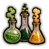
Chemist D/C/B
D/C/B-rank passive. Faster brewing, crystal attuning, bomb making and drug making: +10% / +20% / +30%.
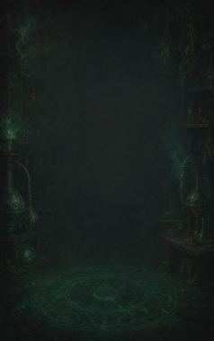
Technique trees › Crafting arts
19 techniques · Ninjutsu tab
Open to every ninja. How high a ninja can go depends on their ninja build.

D/C/B-rank passive. Faster brewing, crystal attuning, bomb making and drug making: +10% / +20% / +30%.
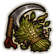
D-rank passive. Knows exactly where to cut: +15% plant harvest yield.
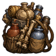
D-rank passive. Used to hauling crates of ingredients: +40 carrying capacity.
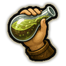
D-rank passive. Drinks potions and eats in a hurry: +30% eating speed.
C-rank passive. Every lesson sticks: +15% global learning.
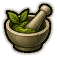
C-rank passive. Knows which salve suits which wound: +10% tend quality.
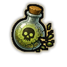
C-rank passive. Small doses over years: +30% toxic resistance.
C-rank passive. Eyes trained on fine measures: aims 10% faster.
C-rank passive. Knows what every potion is really worth: +5% trade prices.
B-rank passive. +20% research speed.
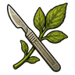
B-rank passive. Steady hands with herbs and blades: +10% surgery success.
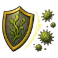
B-rank passive. +20% immunity gain speed.
B-rank passive. Controlled breathing over the fumes: tires 15% slower.
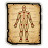
B-rank passive. Knows where every vein runs: +10% melee damage.
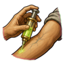
B-rank passive. Tested every brew on themselves first: wounds heal 25% faster.
A-rank passive. Pain and fear are just chemistry: lower mental break threshold, higher pain threshold.
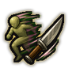
A-rank passive. Steps aside from blows: takes 8% less damage.
A-rank passive. A further +15% alchemy speed, and a chance to make crafted items one quality better (as Cutting Corners).
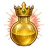
S-rank passive. S-rank. +25% alchemy speed and +20% toxic resistance.